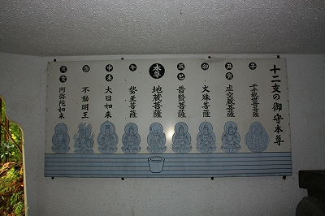

仁王尊プラザ/栃木県日光市
鬼怒川温泉である。
数々のレジェンドを生み出してきた超一級のB級観光地（？）である。
そんな鬼怒川温泉の一画にある仁王尊プラザである。
遺跡のミニチュアとかにゃんマゲとかで喜んでる素人さんたちからは見向きもされない地味な外観。
しかしそこには素敵なカミサマがひっそりと生息しているのだ。
外観は見事なまでにマンション風。というかマンションそのもの。
コインランドリーや接骨院というホントにマンションの一階っぽい看板に並んで仁王尊プラザの入口がある。
はじめに断っておくがこの仁王尊プラザ、マンションの一室にある怪しげな宗教施設とかじゃないですからね。
一部温泉マニアから熱い支持を受ける立派な温泉施設なのだ。
ただし「仁王尊」と「プラザ」、並列してすんなり納まるワードとも思えないがチト気にかかるのだが…

↑こちらがイメージキャラクターの仁王丸クン。ことごとく仁王尊にこだわっている御様子である。
係の方の説明によればこの建物の向こう側に露天風呂や釣堀などがあるという。
早速建物の内部を抜け反対側のエリアに行ってみる事に。
小さい字で仁王尊参詣とあるのが気になりますね〜。

で、建物を抜け外に出る。そこは広場のようになっており、大きな池が目に飛び込んできた。釣堀である。
飢えたニジマスが鬼のように釣り針に飛び掛ってくる、実にエキサイティングな釣堀の向こうには山門のようなものが見える。
ははぁ〜ん。これがこの仁王尊プラザのキモなんだな…
近寄ってみて唖然。
髭ズラの素敵過ぎるコンクリ仁王像が行く手を阻んでいた。
左は吽形、右が阿形。
阿形には如是畜生発菩提とある。
それにしても見ていて思わず笑みがこぼれて来ちゃいそうな仁王サマである。
オヘソはカレイの煮付けみたいだし、胸四角いし。
顔は不自然な髭がアメリカンレスラーを髣髴とさせる。
あと、お腹に妙なデキモノがある仁王さんってたま〜に見かけますよね。
割れた腹筋がデフォルメされてこんな有様になっちゃたようだが、何でこんな表現をするようになってしまったのかは謎だ。

北斗の拳とかマッドマックスを惹起させるその姿だが、円柱の上に立っているため下半身が丸見えって…
キーン！
おお、御丁寧に仁王サマの大事なトコロまで作り込んであるじゃない！
説明によればこの仁王さんを建立した人（ここのオーナー？）が夢で白髪の老人にシンボルが付いた仁王尊を作ってくれと頼まれたそうな。
出た！夢のお告げ！正調チンデレラストーリー！
その老人のコメントによると拝めば子宝に恵まれ股を潜ればハシカが軽く済み中風にかからぬ、とか。
つまり金ぴかの局部はオマケなどではなく最初から設定されていた条件だったのだ。
時は昭和５２年８月、王選手が７５６号のホームランを放った頃のハナシである。
もちろん阿形の方にも立派な金の珍が。つか何で竿まで金色？
気がつけば仁王さまの股下に潜り込んで盗撮まがいの撮影ポジション、な私。
釣堀でグレートゲームを楽しんでいるファミリーからもかなり冷ややかな視線…情けないったらありゃしない…
ちなみに仁王門を潜った先にあったのは門に比べてあまりにも小さな祠だった。
…ような記憶があるけどあまりにも地味だったのでハッキリ思い出せません。すいやせんねえ。
仁王さんの前には温泉湯出(湧出のことか）記念と記された賽銭箱が。
って温泉が湯出(湧出）したのは仁王像が出来てから１０年後って事なのかな？
さて、ここで入浴するのもやぶさかではないのだが、実はここ、仁王尊プラザに来る直前に温泉に入ってしまったので今回は温泉の方はパス。
何でも源泉100パーセントかけ流しの屋形船風露天風呂が御自慢の温泉だそうで。
釣堀の隅には何やら怪しげな人工洞窟がある。
中には十二支の本尊の石像が並んでいた。

まあ、特に珍しいものではないが、純粋なレジャー施設に唐突にインポーズされる仁王門と守り本尊の存在がここをディープな雰囲気にしているのは間違いなかろう。
洞窟の上には六角堂が建っているが直接下から行く事は出来ない。一旦外に出て駐車場から行かなければたどり着けない不思議な構造。
ここでは釣った魚を塩焼きにしてもらえる。
大広間で愚息の釣ったニジマスの塩焼きをつまみながらしばらく昼寝。
おっさんのカラオケ熱唱ビームを浴びたりしてかなりイイ感じの場末感を味わう事が出来たぞ。
館内にあった健康食品ショップ。ここもイイ場末感。
2008.09.
珍寺大道場 HOME